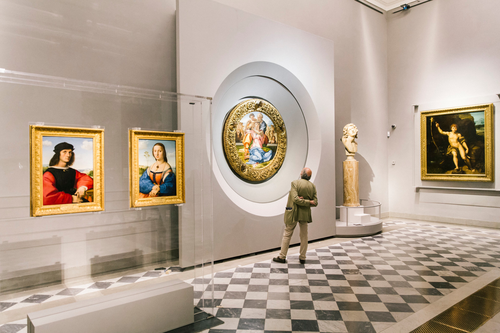
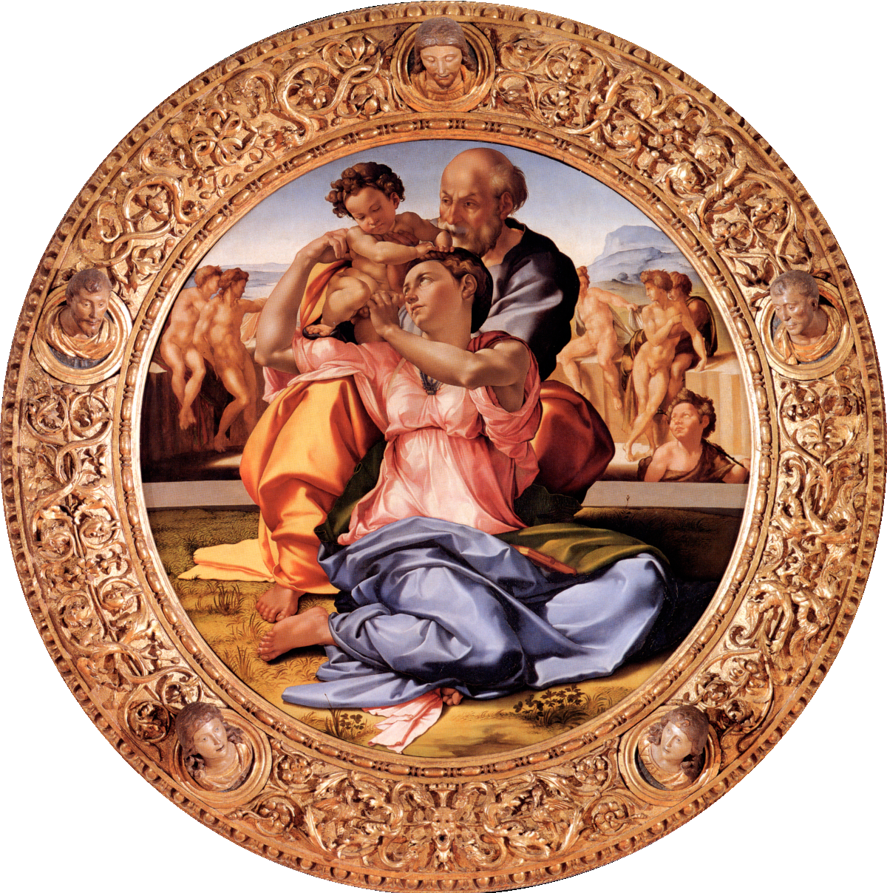
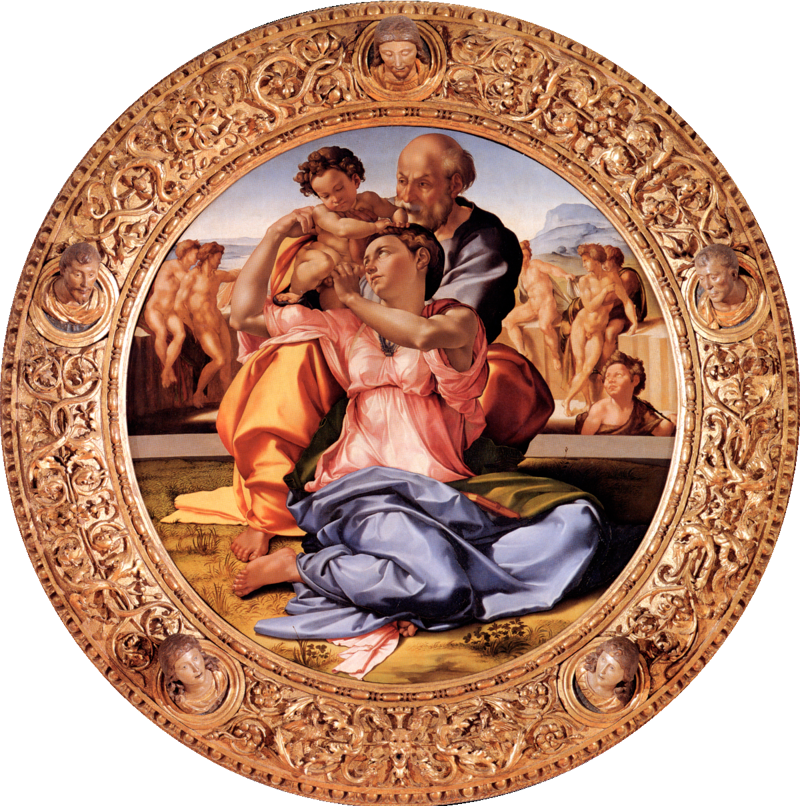

Uffizi
Scroll Down

The Uffizi Gallery
The Uffizi Gallery, located in Florence, Italy, is one of the most famous and important art museums
in the world. Its origins can be traced back to 1560, when the building was constructed by Giorgio
Vasari under the orders of Cosimo I de' Medici, the first Grand Duke of Tuscany, to house the
administrative and judiciary offices of the Florentine state. The word "Uffizi" itself means
"offices" in Italian. The building's architectural design is celebrated for its elegance and its
long, narrow courtyard formed by two parallel wings.
The transformation of the Uffizi into an art gallery was primarily the work of Francesco I de'
Medici, Cosimo's son, who commissioned the top floor of the building to be turned into a private
gallery to house the Medici family's growing collection of paintings and sculptures. Over the
centuries, the collection expanded significantly, enriched by the Medici family's commissions,
acquisitions, and gifts. The gallery officially opened to the public in 1765, making it one of the
oldest museums in the world.
The Uffizi Gallery's collection includes some of the most important and renowned works of the
Renaissance, including pieces by Leonardo da Vinci, Michelangelo, Caravaggio, Raphael, and
Botticelli. Among its most famous works are Botticelli's "The Birth of Venus" and "Primavera,"
Caravaggio's "Medusa," and Leonardo's "Annunciation."
Throughout its history, the Uffizi has been a center of scholarship and appreciation of the
Renaissance and its art. It has survived the challenges of natural disasters, wars, and the shifting
tides of art appreciation to remain a cornerstone of cultural heritage. The gallery not only serves
as a museum displaying works of art but also as a testament to the history of Florence and the
Medici family's significant role in shaping the Italian Renaissance. Its extensive collection,
historical significance, and architectural beauty attract millions of visitors from around the world
each year, making it a pivotal institution for the study and appreciation of Renaissance art.
Collections


 


Florence
Firenze
Florence, known in Italian as Firenze, is a city that captures the essence of Italian culture, history,
and art like no other. Situated in the heart of the picturesque Tuscany region, Florence is widely
regarded as the birthplace of the Renaissance, a period of unparalleled cultural, artistic, and
intellectual development that began in the 14th century and had a profound impact on the course of
Western civilization.
The city's origins date back to 59 BC when it was established by Julius Caesar's soldiers as a
settlement for military veterans. Named Florentia, meaning flourishing, the city lived up to its name by
becoming a bustling commercial hub in the Roman Empire. However, Florence's golden age came much later,
during the Renaissance, under the rule and patronage of the Medici family. This powerful banking family
transformed Florence into the cradle of Renaissance art and thought, sponsoring artists like Leonardo da
Vinci, Michelangelo, Botticelli, and Raphael, whose works remain emblematic of the city's cultural
legacy.
Florence's historic center is a UNESCO World Heritage site, brimming with architectural and artistic
treasures that reflect its illustrious past. The Duomo, officially known as the Cattedrale di Santa
Maria del Fiore, is a masterpiece of Gothic architecture famous for its massive dome engineered by
Filippo Brunelleschi. The nearby Campanile (bell tower), designed by Giotto, offers breathtaking views
of the city and its surroundings.
Other notable landmarks include the Uffizi Gallery, home to one of the world's most important
collections of Renaissance art; the Palazzo Vecchio, the town hall that towers over the Piazza della
Signoria; the Ponte Vecchio, a medieval stone bridge known for its shops of jewelers, art dealers, and
souvenir sellers; and the Basilica of Santa Croce, the final resting place of notable figures such as
Michelangelo, Galileo, and Machiavelli.
Beyond its historical and artistic significance, Florence is also celebrated for its contributions to
the fields of science, literature, and political thought, with figures like Galileo Galilei and Niccolò
Machiavelli hailing from the city. Additionally, Florence is known for its exquisite cuisine, fine
wines, and high-quality leather goods, making it a favorite destination for travelers seeking a taste of
Italian culture and history.
Today, Florence continues to enchant visitors with its timeless beauty, rich cultural heritage, and
vibrant atmosphere, maintaining its status as a symbol of the Renaissance and a testament to human
creativity and achievement.